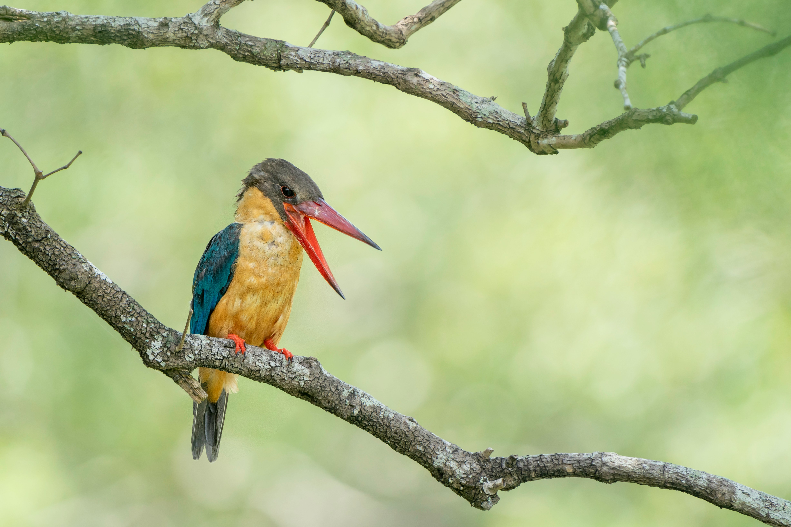

The Stork-Billed Kingfisher is a large and powerful kingfisher with a massive red bill, blue-green wings, a brownish head and body, and pale underparts. It is associated with rivers, lakes, ponds, mangroves, forest streams, and other wet habitats, particularly where substantial trees provide hunting perches. It feeds on fish, frogs, crabs, reptiles, and other small animals, usually watching from a perch before making a forceful dive or descent. Its enormous bill gives it a particularly impressive appearance and allows it to handle prey much larger than those taken by many smaller kingfishers. Despite its size, it can move rapidly and efficiently when hunting.
Family: Alcedinidae